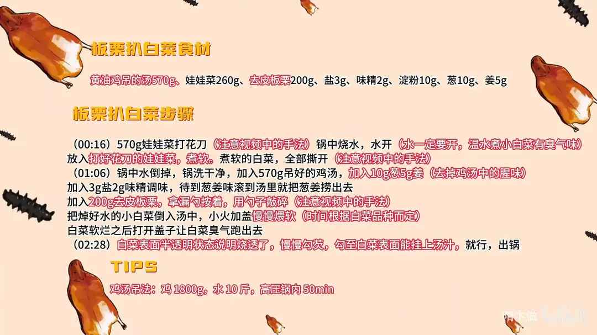

板栗扒白菜
隋卞一做。娃娃菜打花刀，水大开才下锅煮软、再撕开；570g 黄油鸡吊的鸡汤加葱姜去腥后捞出，放 200g 去皮板栗敲碎同煨，白菜表面呈半透明时慢慢勾芡挂汁。
原视频：https://www.bilibili.com/video/BV1ZRyPYoEE6
食材
娃娃菜、板栗、鸡汤 等 8 样
| 类别 | 用料 | 用量 |
|---|---|---|
| 主料 | 娃娃菜 | 260g |
| 主料 | 去皮板栗 | 200g |
| 汤 | 黄油鸡吊的鸡汤 | 570g |
| 去腥 | 葱 | 10g |
| 去腥 | 姜 | 5g |
| 调味 | 盐 | 3g |
| 调味 | 味精 | 2g |
| 勾芡 | 淀粉 | 10g |
步骤
- 打花刀：260g 娃娃菜打花刀；锅中烧水，水一定要开（温水煮小白菜会有臭气味），水开后放入娃娃菜，煮软。
- 撕开：煮软的娃娃菜全部撕开备用。
- 调汤：锅中的水倒掉、锅洗净，加入 570g 吊好的鸡汤，下 10g 葱、5g 姜去掉鸡汤里的腥味，加 3g 盐、2g 味精调味；等葱姜味滚到汤里就把葱姜捞出。
- 下板栗：加入 200g 去皮板栗，用漏勺拨着、勺子敲碎。
- 煨白菜：把焯好水的娃娃菜倒入汤中，小火加盖慢慢煨软，时间根据白菜品种而定。
- 去臭气：白菜软烂之后打开盖子，让白菜的臭气跑出去。
- 勾芡出锅：白菜表面呈半透明说明烧透了，慢慢勾芡，勾到白菜表面能挂上汤汁即可出锅。
小贴士
- 鸡汤吊法：鸡 1800g、水 10 斤，高压锅内压 50 分钟。
- 板栗用勺子敲碎而不是切碎，碎粒入汤后汤汁更浓、更挂得住白菜。
讲解要点
难度：★★☆☆☆（新手可做，难点是白菜的火候和勾芡——要煮到软烂而不失其形）
为什么这么做
- 娃娃菜先打花刀再焯：打完花刀一撕就是规整的条；要是先切成细条再下锅焯，哗一下就散了。
- 必须真开水下锅焯：温水下白菜煮出来有「捂过」的臭味，酒店反复试过；开水下还能顺带去掉白菜那点涩味。
- 焯完的锅洗净再下鸡汤：鸡汤是提前吊好的，锅里留着焯菜的水会冲淡、串味。
- 葱姜只在汤里滚一下：目的是去鸡汤的腥味，出味就捞出，久煮葱姜味会盖过鸡汤。
- 板栗用勺子敲碎、不直接砸：直接砸栗子会跑；敲碎后栗子的香味才煮得进汤里。打成酱也行，但吃着糊嘴。
- 小火加盖慢煨：白菜要把鸡汤吸足、煮到软烂，火大汤干得快、白菜还不透。
- 开盖让臭气跑掉：焖过之后白菜有股气味，开盖散掉，汤味才干净。
- 白菜半透明才勾芡：半透明说明已经烧透；芡要一点点加，勾到表面能挂住汤汁就停。
容易翻车
- 温水或凉水下白菜，煮出臭味，后面怎么调味都盖不住。
- 白菜没煮够，芯还硬，浇汁也不入味。
- 各地白菜品质不同，别死守 2 分钟，以「软烂」为准，有的要十几分钟。
- 勾芡一次倒太多，结坨挂不匀。
原片尾卡

原片文案
AI 字幕校准稿
这应该是我们创号到现在最不挑人的一道菜了，不管老人小孩、男人女人、挑食不挑食，都会喜欢吃板栗扒白菜。名字一听就好，冬天啊，白菜来吧。
我们选的是娃娃菜，把外边老帮全部掰掉，打一个花刀，是这样的，为什么呢？一会你们看。锅里边焯水，把娃娃菜焯一下，主要是为了去掉菜里那淡淡的涩味。
焯白菜一定要开水下，千万记住这是真开水。用冷水下锅焯出来的白菜，有那种捂完了的臭味。酒店我们反复试过很多次：一大锅白菜，哎呀怎么这么臭？后来一看，温水下的白菜，下锅之后就不行了。
这样一撕，它就非常规矩了，就是因为提前打了这个花刀；你要都切成细条下锅焯水，哗就散了。我们把锅洗干净，然后里边加入鸡汤——吊汤很关键——加上葱姜，去掉鸡汤里的腥味，然后盐、味精调味。
葱姜搁在汤里边滚一下就行，葱姜味滚到汤里、有香味了就捞出去。然后加入板栗，这个真的好香啊，在外面都能闻到。拿勺子敲一敲，板栗的味道要煮到汤里去，不能直接使勺子砸，直接砸就跑了。
把焯好的白菜倒在汤里边。这里如果把栗子打成酱直接放汤里也可以，但吃着糊嘴。关小火加盖烧它两分钟，要把白菜煮得软、入味。
焖上一分钟之后把盖打开，让白菜的臭气跑出去。你看白菜上面有点半透明状态了，这肯定烧透了。勾芡一点点来，不要着急，勾到白菜表面能挂上汤汁就行。
把它装到砂锅里面，漂上几个枸杞子。白菜完全已经趴了、烂了，一点白菜的涩味都没有，把鸡汤的味道吸得特别足，回口还有白菜的甜和栗子的香，软烂而不失其形。
这个菜火候上一定要把白菜煮到软烂为止。各地区买的白菜品质不太一样，反正你就煮软烂为止，不一定都得是 3 分钟，不一定 5 分钟，有的煮十几分钟。刚才说煮 2 分钟，我一看这白菜，确实是只要煮到火候了就行。
鸡汤的味道太香了、太鲜了，真好。外面下着雪，在这个屋里吃，绝了。大家回去快试试吧。